来源：https://pk4kpe35xu.feishu.cn/docx/RX47d7zHOowvitxDCR3cH6wxnE0
圈友们，大家好，我是十万伏特，
不知道大家有没有感觉，今年年末，感觉整个生态环境不是很好，原来我们跑了2年的快手磁力聚星无人直播，下半年基本都停摆了，中间测试了很多新的赛道也没有那种激情的感觉，
今天分享的这个项目，也是我们多年运作的母盘项目之一，相对做项目这个会更长久，其实也不能把它称之为项目，就是一个中介属性，我们是满足客户需求和对接商家的桥梁
这个项目大部分人基本都接触过，而且是被迫的找这个行业的人做服务，但是从来没有人考虑，这个行业具体有怎样的生存空间和足够的魅力
很多人不理解什么是【全域账号服务商】，给大家说两个词，很多人就理解了，号商、刷粉（千川涨粉），我们用稍微专业名词给它称之为“服务商”，但是服务商远不止这两项业务，互联网周边的业务我们基本全部涉猎
我们周边从来不缺卖项目和付费买项目的人群，他们交付或参与各种项目除了一个付费门槛，还要很多的准备工作，比如抖音直播，需要1000粉；比如带货，根据它挂车数量不同，需要粉丝就不同，一般是1000-10000粉；
视频号带货需要100-1000粉；快手开通磁力聚星，需要500粉；比如做短剧，也需要1000粉；
还有0粉开直播伴侣、强开橱窗、卡口碑分、服务分等等；还有需要各种账号、软件的，
这就是我们服务的目标人群，我们把他们称之为客户，我们就是客户与“商家”的桥梁，完成客户的需求，从而赚到一定的差价，而且是稳赚不赔的，全程不需要垫资，客户要先付款项，我们在完成服务
部分业务收入展示：
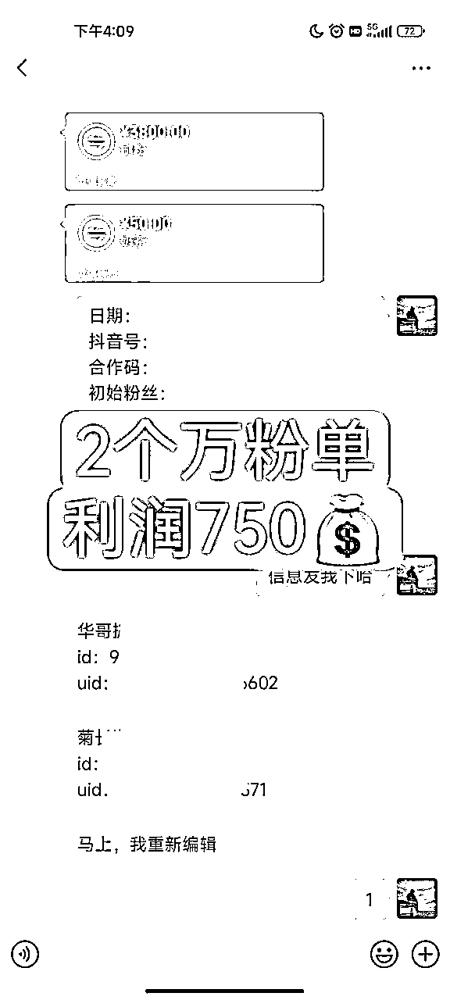
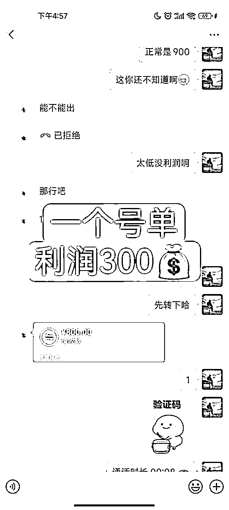
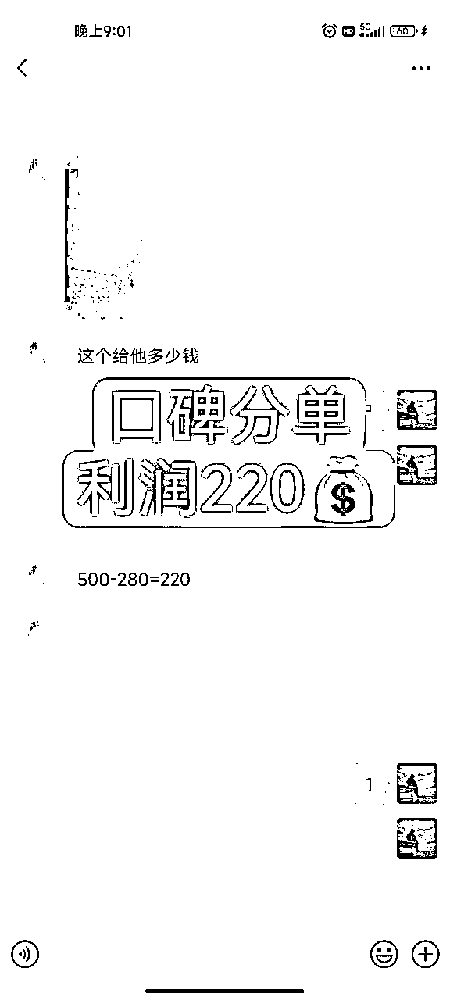
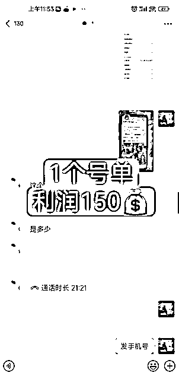
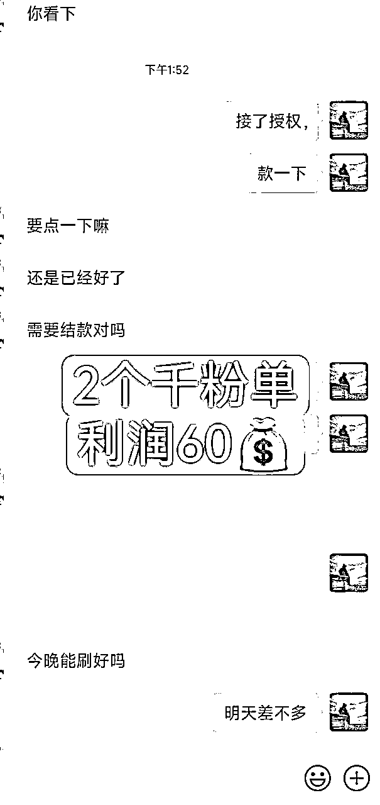
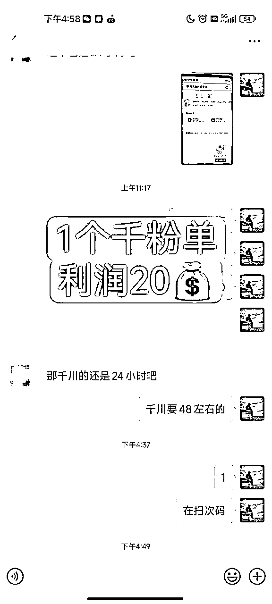
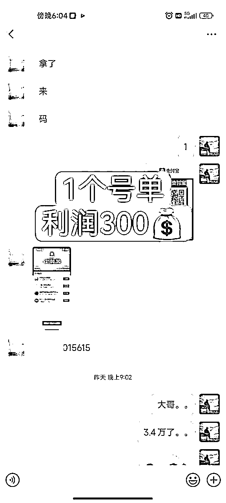
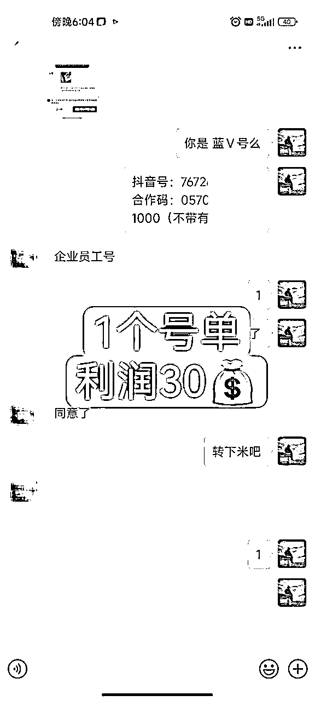
相信大家在做项目的同时，自己本身也是需要这块服务的，这个不用多说；其次在各种的项目交流群也会见到下面的聊天记录
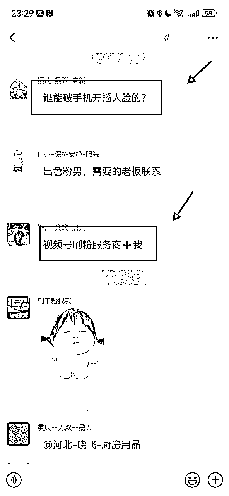
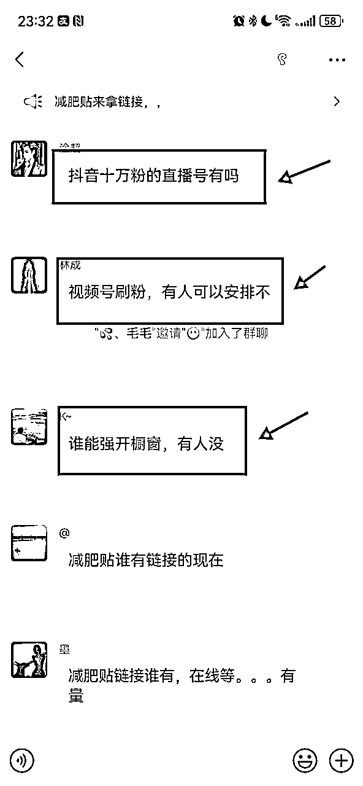
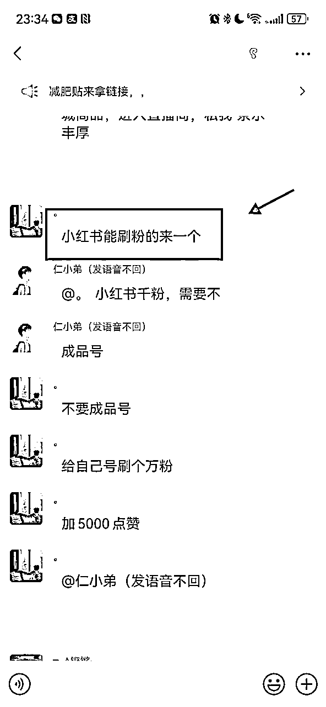
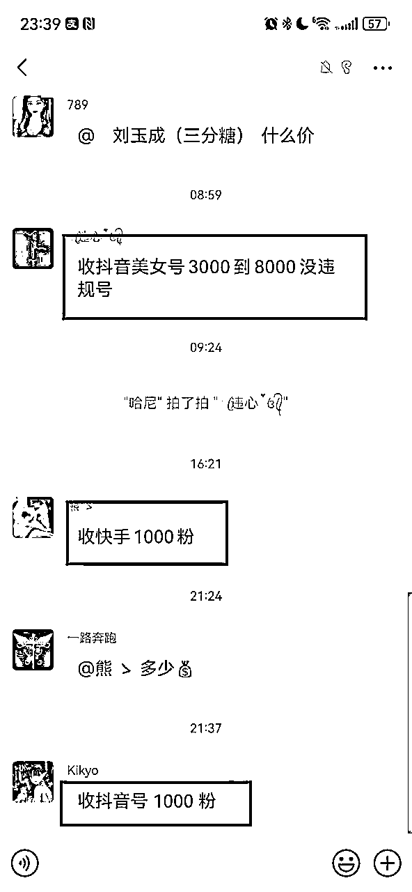
这个行业是毋庸置疑的刚需行业，我认为这个行业是不会消失的行业，并且需大于供的关系，除非整个网赚行业崩塌，没人从事互联网了
当我们与客户首次成交后，我们就有了第一次的信任背书，只要他们是创业粉，一定会长期在这个赛道生存，会长期的找我们购买需求，我们只需要做好客户的维护和售后，
并且有了信任背书后，客户也会推荐他的朋友找我们来做业务，甚至接触了团队长，他们一整个团队的人都会来购买需求；我们每天会有很多的被动流量来找我们进行付费购买
到了后期，基本不需要主动进行拓客，每天会有很多人被动的添加好友，都是来自老客户的转介绍，甚至的有的人把我们的名片发到项目群里，微信都能被添加频繁；
业务板块不同，收费价格和利润空间不同，我们拿抖音涨粉举例，涨粉一单利润20-30，一个客户可能要刷好几个账号的粉，一天接个10单8单的，单这一块一天就小几百的收入
下面给大家看看我们的业务体量，只展示微信部分账单统计（不含支付宝、银行卡），当然你所看到的是流水，不是纯佣，纯佣和业务内容不同所产生的佣金不同
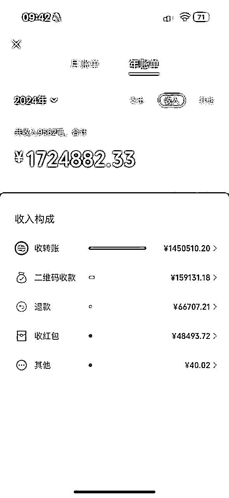
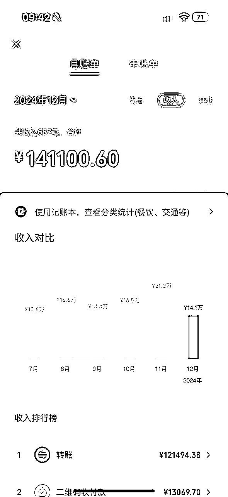
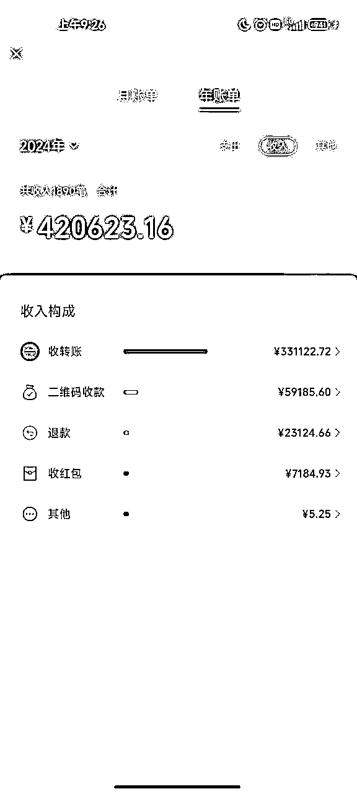
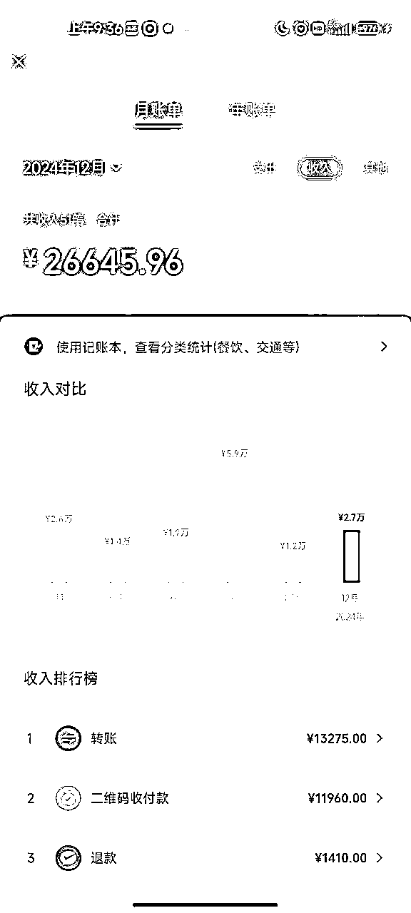
都说做项目的不如卖项目的，其实卖项目的不如做业务的，我们解决的是供需关系，没有任何投资风险和垫资行为，每一单的成交都是纯赚
网赚的项目特别多，所以涉及的业务也非常多，下面是我们经常接触的业务，最多的还是抖音板块；这个体系成交也非常快，因为他们是刚需需求，并且懂得平台规则，价格合适直接成交
还有一点要注意，一定要知道，什么我们能做，什么不能做，涉及身份信息的不要触碰，灰产不要触碰，赚钱要有底线，不然真出现问题也会有牵连
千川涨粉、0粉强开橱窗、0粉开通伴侣权限、口碑分、体验分、抖店差评豁免权、来客蓝后台、场观上榜人气、账号解封等
视频号涨粉、账号、口碑分等
涨粉、小铃铛跳转、挂铁、点赞、评论、私信外链跳转等
抖/快/红薯/头条/视频号：1000-100万粉账号，分三无、恢复、违规中等
直播工具、短视频工具、全网公会/MCN代开等
起一个和业务相关的名称，比如：xxx-全业务、抖/快服务商、千川运营服务商等等
每日更新朋友圈内容，让别人知道你是干嘛的，增加客户印象感
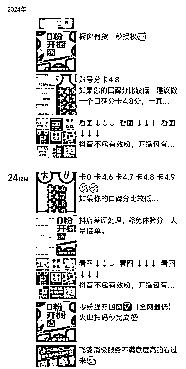
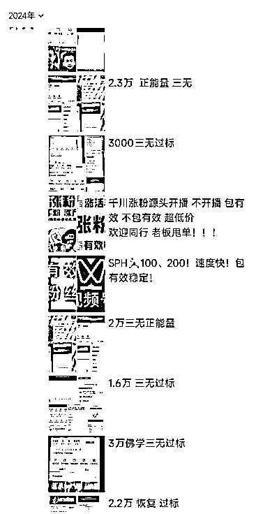
我们的目的，是为了首次和客户建联，有了首次信任基础做背书，后面他会找你持续下单购买服务，有成交关系好的客户，可以让客户帮你拉几个群进行裂变
这个项目比较适合在网赚圈子里长期做项目的人群，群是宝贵的资源，找身边朋友帮忙多拉几个项目交流群，在群内进行引流
①改群昵称
可以改为千川涨粉+号商+口碑分，这样即使你在群里发个表情，人家看到群昵称也知道你是干嘛的，属于友好广告
②日活跃
自己本身的项目群，尤其是带货这个圈子，如果你是学员，不好直接引流，可以间接引导，举个例子：还是刷粉快，我找了个人刷的千川，权限立马开了，还挺便宜的，
这个时候就会有人问你，花了多少钱啊，怎么怎么样之类的，那就可以名正言顺的把业务名片发到群里，
话术什么的人根据场景不同，自己想象发挥就好
③偶尔发广告
有一些群，刚开始活跃，后期不活跃了，或者没有太大价值的，后期就可以发广告引流了，踢了也无所谓的
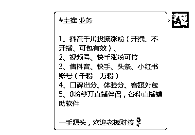
编辑好一段业务介绍话术，群发微信好友（可以剔除掉亲戚朋友），话术如下：
业务介绍：
#主推 业务
1、抖音千川投流涨粉（开播、不开播、可包有效）
2、视频号、快手涨粉可接
3、售抖音、快手、头条、小红书账号（千粉—十万粉）
4、口碑出分、体验分、客服外包
5、0粉秒开直播伴侣，各种直播辅助软件
一手源头，欢迎老板对接
低价引流：
#今日特价
千川不开播不包有效千粉200，24小时左右完成
千川不开播包500有效280元、24-72小时左右
千川开播涨粉包百分之50有效180元、1-2小时完成
中途确保不要违规断播不售后请注意！！！开播掉粉块只售后有效粉问题
不开播涨粉，需要账号登录我这边涨粉期间不要用此账号进入直播间，操作中我们是会改头像的介意勿做 ，140元一千粉
24小时内完成千粉，几乎不掉粉包50%-90%有效
在社交平台，发图文进行引流或者评论区做截流
正常一般是客户主动询价，我们把他需要做的业务内容报价给他就可以，整个的成交逻辑是简单快捷的，但是这里没办法一一列举成交话术，大家都知道，价格会随平台规则产生波动，其次涉及内容太过于繁多，属实细化不清楚
我们朋友圈也或多或少都会有做业务的人，可以询价，自己适当增加20-30的利润在报价给客户
但是我们记住一点，新客先低价成交，熟悉后再恢复原价，客户转介绍的，按正常价格报价
好了，到这里写完了，我个人看来，咱们或多或少都有一个圈子，身边包括自己都会有这种需求，相对比做项目来讲，门槛还是比较低的，找到靠谱的上游渠道链接下游客户，就可以从中赚取这个差价佣金
希望通过这篇文章，帮助圈友们对这个小行业有一定了解，也希望通过这篇文章链接到有需求的人，我们身边肯定会需要一个做业务的朋友，他就是一个百宝箱(*^▽^*)